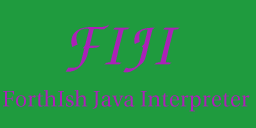

FIJI the ForthIsh Java Interpreter is an
interactive environment with a procedural syntax similar to the
Forth programming language. FIJI can load, introspect, and
execute Java classes and methods. FIJI's main use is for unit and
component testing of Java, or for an interpreter in an all-Java
environment.
FIJI works at the command line, or as a GUI application.
Here's a screenshot of
FIJI.
Download FIJI from FIJI's SourceForge
project page at http://sourceforge.net/projects/fiji/
FIJI has been used to test the PigIron Java Class Libraries
for VSMAPI.
The Java interpreter idea used in FIJI has been largely
subsumed in recent years in my domain-specific language Ublu which is aimed at
remote operation large legacy systems.